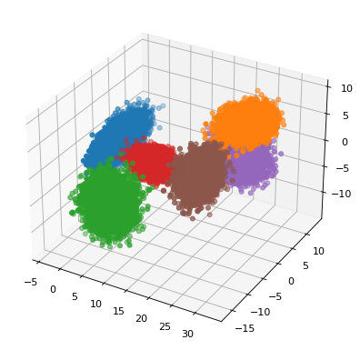
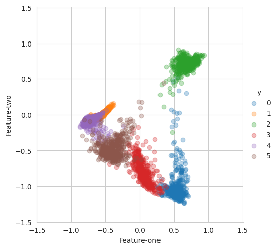
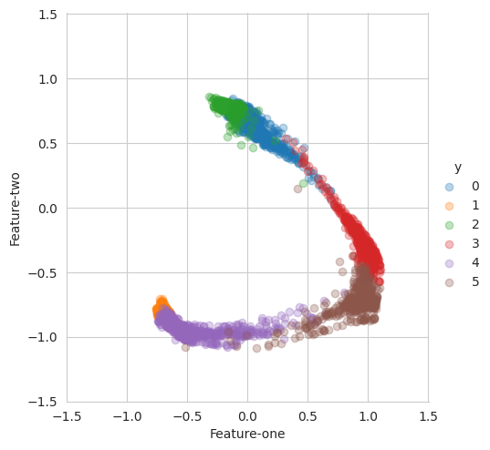
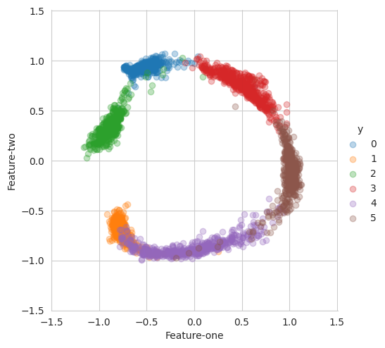

DDR Demonstration: 3D Gaussian Dataset
This demo showcases the application of Discriminative Dimensionality Reduction (DDR) on a simulated 3D Gaussian dataset.
Dataset
3D Gaussian: Six classes of data points sampled from 3D Gaussian distributions
5,000 data points per class
Method
Generate 3D Gaussian data
Map data to 100 dimensions using random matrices
Apply DDR to learn 2D features
Visualization
2D features learned by DDR are displayed
Distributions projected onto unit circle for clarity
This demonstration shows DDR’s ability to disentangle high-dimensional data into interpretable low-dimensional representations while maintaining class separability.
Imports and Setup
[1]:
# basic functions
import os
import sys
import math
import numpy as np
import shutil
import setproctitle
import argparse
import matplotlib.pyplot as plt
# torch functions
import torch
import torch.optim as optim
import torchvision.transforms as transforms
from torchvision.utils import save_image
from torch.utils.data import DataLoader, TensorDataset
import torchvision.transforms as transforms
# local functions
from model import *
from toys import toy_2d, toy_3d
from densenet_sim import DenseNet
parser = argparse.ArgumentParser()
parser.add_argument('--batchSz', type=int, default=128, help='mini batch size')
parser.add_argument('--nEpochs', type=int, default=30, help='the number of outter loop')
parser.add_argument('--latent_dim', type=int, default=2, help='the dimension of latent space')
parser.add_argument('--no-cuda', action='store_true', help='if TRUE, cuda will not be used')
parser.add_argument('--cuda_device', type=int, default=0, help='choose cuda device')
parser.add_argument('--save', help='path to save results')
parser.add_argument('--seed', type=int, default=1, help='random seed')
parser.add_argument('--dataset', type=int, default=3, help='1: circles data; 2: moons data; 3: 3d guassian data')
parser.add_argument(
'-f',
'--file',
help='Path for input file. First line should contain number of lines to search in'
)
args = parser.parse_args()
args.cuda = not args.no_cuda and torch.cuda.is_available()
device = torch.device("cuda" if args.cuda else "cpu")
args.save = args.save or 'Results/toys'
setproctitle.setproctitle(args.save)
torch.manual_seed(args.seed)
if args.cuda:
torch.cuda.manual_seed(args.seed)
torch.cuda.set_device(args.cuda_device)
if os.path.exists(args.save):
shutil.rmtree(args.save)
os.makedirs(args.save, exist_ok=True)
Simulated data loading
[2]:
kwargs = {'num_workers': 1, 'pin_memory': True} if args.cuda else {}
# get dataloaders
if (args.dataset == 1) or (args.dataset == 2):
X_train, X_test, y_train, y_test = toy_2d(args, sample_size = 10000)
elif args.dataset == 3:
X_train, X_test, y_train, y_test = toy_3d(args, single_size=5000)
train_dat = TensorDataset(torch.from_numpy(X_train).float(), torch.from_numpy(y_train))
trainLoader = DataLoader(train_dat, batch_size=args.batchSz, shuffle=True)
test_dat = TensorDataset(torch.from_numpy(X_test).float(), torch.from_numpy(y_test))
testLoader = DataLoader(test_dat, batch_size=args.batchSz, shuffle=False)

Training process
[3]:
# nets and optimizers setting
R_net = DenseNet(growthRate=12, depth=10, reduction=0.5,
bottleneck=True, ndim = args.latent_dim, nClasses=10)
D_net = Discriminator(ndim = args.latent_dim)
print(' + Number of params (R net) : {}'.format(
sum([p.data.nelement() for p in R_net.parameters()])))
print(' + Number of params (D net) : {}'.format(
sum([p.data.nelement() for p in D_net.parameters()])))
if args.cuda:
R_net = R_net.cuda()
D_net = D_net.cuda()
optimizer_R = optim.Adam(R_net.parameters(), weight_decay=1e-4)
optimizer_D = optim.Adam(D_net.parameters(), weight_decay=1e-4)
trainF = open(os.path.join(args.save, 'train.csv'), 'w')
testF = open(os.path.join(args.save, 'test.csv'), 'w')
+ Number of params (R net) : 20276
+ Number of params (D net) : 16833
[4]:
for epoch in range(1, args.nEpochs + 1):
if epoch < 50: zlr = 2.0
elif epoch == 50: zlr = 1.5
elif epoch == 150: zlr = 1.0
train(args, epoch, R_net, D_net, trainLoader, optimizer_R, optimizer_D, trainF, zlr, device)
# test(args, epoch, R_net, testLoader, optimizer_R, testF, device)
if epoch % 10 == 0:
X_train, y_train = npLoader(trainLoader, R_net, device)
X_test, y_test = npLoader(testLoader, R_net, device)
scatter_plots(X_test, y_test)
plt.show()
trainF.close()
testF.close()
print("Done!")
Train Epoch: 1, Loss: 5.1337, Error: 100.0000, dCor_loss: 0.6496, VG: 0.0609, D: 0.69, OG: 0.68
Train Epoch: 2, Loss: 5.0541, Error: 100.0000, dCor_loss: 0.6016, VG: 0.8047, D: 0.71, OG: 0.72
Train Epoch: 3, Loss: 4.7975, Error: 99.1667, dCor_loss: 0.5783, VG: 0.0671, D: 0.71, OG: 0.70
Train Epoch: 4, Loss: 4.7546, Error: 94.1667, dCor_loss: 0.6007, VG: 0.0883, D: 0.71, OG: 0.66
Train Epoch: 5, Loss: 4.7377, Error: 77.5000, dCor_loss: 0.5922, VG: 0.0442, D: 0.68, OG: 0.65
Train Epoch: 6, Loss: 4.7114, Error: 80.8333, dCor_loss: 0.6387, VG: 0.0507, D: 0.69, OG: 0.67
Train Epoch: 7, Loss: 4.7707, Error: 87.5000, dCor_loss: 0.6083, VG: 0.0678, D: 0.70, OG: 0.72
Train Epoch: 8, Loss: 4.7737, Error: 98.3333, dCor_loss: 0.6678, VG: 0.0416, D: 0.70, OG: 0.71
Train Epoch: 9, Loss: 4.7226, Error: 84.1667, dCor_loss: 0.5547, VG: 0.3677, D: 0.67, OG: 0.78
Train Epoch: 10, Loss: 4.7163, Error: 76.6667, dCor_loss: 0.6282, VG: 0.0448, D: 0.69, OG: 0.66

Train Epoch: 11, Loss: 4.8271, Error: 100.0000, dCor_loss: 0.5880, VG: 0.1435, D: 0.68, OG: 0.77
Train Epoch: 12, Loss: 4.8515, Error: 98.3333, dCor_loss: 0.6039, VG: 0.6926, D: 0.68, OG: 0.73
Train Epoch: 13, Loss: 4.8757, Error: 100.0000, dCor_loss: 0.6449, VG: 0.0342, D: 0.68, OG: 0.71
Train Epoch: 14, Loss: 4.7594, Error: 95.0000, dCor_loss: 0.6188, VG: 0.0519, D: 0.69, OG: 0.67
Train Epoch: 15, Loss: 4.8208, Error: 97.5000, dCor_loss: 0.5921, VG: 0.0295, D: 0.69, OG: 0.68
Train Epoch: 16, Loss: 5.0234, Error: 100.0000, dCor_loss: 0.6548, VG: 0.0195, D: 0.69, OG: 0.71
Train Epoch: 17, Loss: 4.9168, Error: 100.0000, dCor_loss: 0.5963, VG: 0.0322, D: 0.69, OG: 0.69
Train Epoch: 18, Loss: 5.0287, Error: 100.0000, dCor_loss: 0.5803, VG: 0.0468, D: 0.69, OG: 0.69
Train Epoch: 19, Loss: 4.9078, Error: 100.0000, dCor_loss: 0.6310, VG: 0.0344, D: 0.69, OG: 0.68
Train Epoch: 20, Loss: 4.8624, Error: 99.1667, dCor_loss: 0.6452, VG: 0.4576, D: 0.66, OG: 0.71

Train Epoch: 21, Loss: 4.9008, Error: 98.3333, dCor_loss: 0.6293, VG: 0.3432, D: 0.68, OG: 0.68
Train Epoch: 22, Loss: 4.7611, Error: 95.0000, dCor_loss: 0.6207, VG: 0.1039, D: 0.69, OG: 0.66
Train Epoch: 23, Loss: 4.8182, Error: 100.0000, dCor_loss: 0.6211, VG: 0.0338, D: 0.69, OG: 0.68
Train Epoch: 24, Loss: 4.7539, Error: 81.6667, dCor_loss: 0.6134, VG: 0.0255, D: 0.69, OG: 0.69
Train Epoch: 25, Loss: 4.7712, Error: 87.5000, dCor_loss: 0.6116, VG: 0.0199, D: 0.69, OG: 0.71
Train Epoch: 26, Loss: 4.8258, Error: 95.8333, dCor_loss: 0.6232, VG: 0.0449, D: 0.70, OG: 0.67
Train Epoch: 27, Loss: 4.8684, Error: 100.0000, dCor_loss: 0.6106, VG: 0.0389, D: 0.69, OG: 0.68
Train Epoch: 28, Loss: 4.7622, Error: 82.5000, dCor_loss: 0.6299, VG: 0.0201, D: 0.69, OG: 0.72
Train Epoch: 29, Loss: 4.8578, Error: 100.0000, dCor_loss: 0.6380, VG: 0.0053, D: 0.69, OG: 0.69
Train Epoch: 30, Loss: 5.0126, Error: 100.0000, dCor_loss: 0.6087, VG: 0.0179, D: 0.69, OG: 0.69

Done!
[ ]: